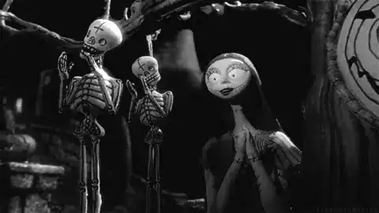
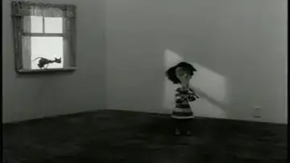
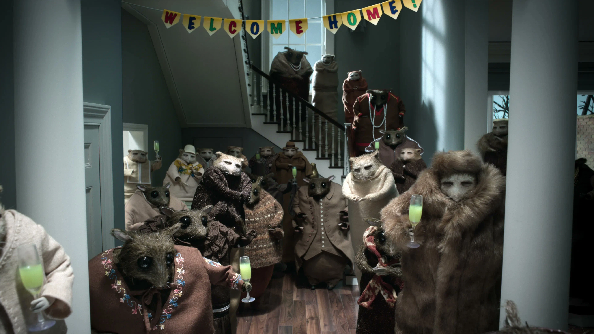

Vol.19 / The Gothic Visionary
ひょろ長い影の住人たち：
ティム・バートンが愛した「不完全な魂」
2026.03.10 UP


[Search Keyword: Nightmare Before Christmas GIF]
◎ 作者経歴：ディズニーをクビになった天才
1958年カリフォルニア生まれ。名門カルアーツで学びディズニーに入社しますが、彼の描く「不気味な造形」は当時のディズニー作品には馴染まず、異端児として扱われました。しかし、1982年の短編『ヴィンセント』でストップモーションへの愛を爆発させ、1993年の『ナイトメアー・ビフォア・クリスマス』でその地位を不動のものにしました。
◎ 代表作紹介：バートン・エステティクスの系譜
ナイトメア はいかにして作られたか (1993)
『ナイトメアー・ビフォア・クリスマス』の狂気的なメイキング映像。原案・製作のティム・バートンとヘンリー・セリック監督がいかにしてこのストップモーションの金字塔を作り上げたか、途方もない手作業の裏側を確認できます。
ティム・バートンのコープスブライド (2005)
監督。死者の世界がカラフルで陽気、生者の世界がグレーで退屈という対比構造。パペットの皮膚にシリコンを使用し質感が一気に向上。
フランケンウィニー (2012)
監督。1984年の自作短編（実写）をストップモーションでセルフリメイク。白黒映像による光と影の表現が、クラシックホラーへの愛を物語る。
ヴィンセント (Vincent) (1982)
監督。わずか6分のデビュー短編。バートンの原点であり、ドイツ表現主義の影響を強く受けた鋭利なデザインがすでに完成されている。
◎ 技術と特徴：ドイツ表現主義と細長い四肢
- 🔹 「バートン風」のデザイン： 極端に細長い手足、大きな目、そして目の下の隈。これらは「脆さ」と「繊細さ」を物理的に表現した構造であり、ストップモーションのパペットに宿る「不気味の谷」を逆手に取った天才的なキャラデザ。
- 🔹 アナログとデジタルの融合： 『コープスブライド』以降、パペット内部にギアを仕込み、頭部の差し替えなしで表情を変える技術を導入。滑らかな動き（デジタル的）と、素材の質感（アナログ的）を高度に両立。
◎ 関連サイト / 視聴リンク
◎ 関連作：バートン・スピリットの共鳴
コラライン はいかにして (ヘンリー・セリック)
『ナイトメアー〜』の監督。バートンのダークさを継承しつつ、よりシュールで緻密な世界観を構築したライカ・スタジオの傑作メイキング映像。
ピノッキオ はいかにして (ギレルモ・デル・トロ)
「異形の存在への愛」という点でバートンと深く共鳴。大人のためのダークファンタジーの到達点、その緻密な舞台裏。

家をめぐる3つの物語 (Netflix)
各エピソードで作家が異なるが、第1話の「不安を煽る人形の質感」は、バートンが切り拓いたダークストップモーションの現代的進化形。
◎ 今後の予定：Netflix『ウェンズデー』の成功を経て
近年は実写ドラマ『ウェンズデー』で再び世界的な旋風を巻き起こしているバートン。彼の根底にあるのは常に「はみ出し者への共感」です。ストップモーションの新作への期待は常に高く、彼が設立に関わったスタジオや後進たちが、そのゴシック精神をデジタル時代に繋ぎ続けています。